UX audit: Reservations
Data state found: one booking in the whole Property (reference RJY1FR2, one night, Suite 201, status Confirmed, arriving today, no price), three Units (101, 102 Rooms; 201 Suite), and no price set for either unit type. One more guest (ahmed, Room 102) is in house and overdue, visible only on the Room calendar. "Empty" and "very large" states were not reachable and are labelled inferred from code. The screenshots show the demo guest's contact details because they are on screen; none are repeated in this text.
Seconds: I did not time tasks with a stopwatch; tool latency would dominate and mean nothing. Clicks and keystrokes are counted instead.
Seconds: I did not time tasks with a stopwatch; tool latency would dominate and mean nothing. Clicks and keystrokes are counted instead.
1. Verdict
- Could the persona use it unaided? Mostly yes for taking and changing a booking, no for finding every booking. The dialogs are clear, availability is marked on the Unit list, conflicts disable Save with a reason, and cancel/no-show name their consequences.
- Biggest risk (RES-01): a guest who is in house past their departure date (here: ahmed, Room 102, due out Oct 1) is not on the Reservations list at all, and the "In house" tab says 0. The Unit picker still says "Someone is staying then" for that room, so the desk is told about a guest the list cannot show. Verified.
- Second risk (RES-02): at a 1200 px window with the sidebar open, Check in and the row menu are pushed off-screen; at 768 and 375 px the whole page overflows sideways. The primary daily action is hidden on a common laptop width. Verified.
- Third risk (RES-05/RES-06): a returning guest is only recognised by an exact email, so a phone-in with a name and number creates a duplicate guest with no warning, and with no price set every booking is silently "not charged" behind a small grey note.
- Search is good for name, reference, unit and "Oct 11" but fails on a phone number typed with spaces or +90 and on dd.mm.yyyy dates, which contradicts the feature doc (RG-S4-16).
2. Findings
| ID | Severity | Where | What happened | What I expected | Suggested fix | Effort | Evidence | Status |
|---|---|---|---|---|---|---|---|---|
| RES-01 | blocks work | /en/reservations, Front Desk, one in-house overdue guest | ahmed is in house in Room 102 and overdue (arrived Sep 29, due out Oct 1; Room calendar drawer says "Overdue: they were due to leave on Oct 1, 2026"). Reservations shows 1 row (a different guest) and the tab "In house" shows 0. The new-booking Unit list marks 102 "Someone is staying then". | Every guest who is physically in house is on the list under "In house", especially an overdue one, who is the one who needs an extend or a check-out. | Make the list query keep checked-in / in-house bookings whatever their end date. The filter keeps a booking when ends_on >= today or status is requested/confirmed, so a checked-in booking with a past end date drops out (listReservations in packages/ranza/reservations/src/module.ts). |
S | 29, 01, 07. Reproduced Y (repeated list read after reload) | verified (symptom), inferred (cause) |
| RES-02 | slows me down | /en/reservations, Front Desk, 1200 px window, sidebar open, 1 row | The table is 1048 px wide inside a 896 px area. On load the Status column is the last visible one; Check in and the "..." menu are off the right edge until you scroll the table sideways. Opening the row menu scrolls the table and pushes the Guest column out of view. At 1440 px it fits. A longer email or name would widen it further (column widths are content-driven). | The row action is always visible at the laptop widths a desk actually uses (1280-1366). | Pin the Action column at the trailing edge (sticky), or default the sidebar to collapsed under ~1400 px, or drop the Price/Status columns into the Columns menu below a width. | M | 01 (no Check in visible), 10 (scrolled), 11 (fits). Y | verified |
| RES-03 | slows me down | /en/reservations, Front Desk, 768 px and 375 px (emulated) | 768 px: the sidebar stays open, the page itself scrolls sideways (document 829 px), the status tabs are clipped ("Upcon"), the breadcrumb truncates to "W( > F..", and Unit/Price/Status/Action are off-screen. 375 px (emulated mobile): the layout viewport grows to 573 px, the tab strip and table are cut off, and the New reservation dialog is wider than the screen so the close button and the Create button are off-screen. | A card-style row on a phone with the status and the primary action visible, and a dialog that fits the screen. | Under ~768 px render each booking as a stacked card (guest, dates, unit, status, action); make the dialog max-w-[calc(100vw-2rem)]; collapse the sidebar by default under 1024 px. |
L | 21, 22, 23. Y | verified in emulation. A real phone may differ in how the viewport expands, so treat the exact 573 px as emulator-specific. |
| RES-04 | slows me down | /en/reservations search, Front Desk, one row | Works: reference (any case, partial), guest name (partial), unit, unit type, status word, "oct 11", "11 oct", "2026-10-11", phone typed as one digit run. Fails (0 results): the same phone typed with spaces or with +90, a partial phone with a space, "11.10.2026", "11/10" (the formats a Turkish desk types), two words from different fields ("guest-name email-domain"), and a one-letter typo in the name. | Feature doc RG-S4-16: "the digits find the booking though the number was written with spaces". A phone number read out loud is typed in whatever format the caller says it. | Normalise the typed query the same way the stored phone is (strip spaces, +, leading 0/90), parse dd.mm.yyyy and dd/mm, and match every word of a multi-word query against the row instead of the whole string against one field. | S-M | 12. Y (ran all queries in one session, results consistent) | verified. The doc contradiction is inferred from RG-S4-16 (status "proposed"). |
| RES-05 | causes errors | New reservation dialog, Front Desk | There is no guest search. Typing the exact name of an existing guest shows nothing. The only de-duplication is an exact email match ("An address already on file books that same Guest again"). A returning guest who phones in with a name and number but no email becomes a second guest record, silently. | While typing the name or phone, a suggestion "Existing guest: use this one?" so a repeat guest is reused. | Add a lookup on name and phone as they are typed, shown as a suggestion list, never an automatic merge (blueprint 18.7 forbids that). The duplicate-review screen is deferred (RG-DEF-05), so a lookup at booking time is the cheap prevention. | M | Typed an existing guest's name, no listbox appeared (checked the dialog DOM). Y | verified. The matching rule is by design: RG-S1-18 (approved) says exact email only. |
| RES-06 | causes errors | New reservation dialog and Change booking, Front Desk, no rate set for the unit type | After choosing a unit the dialog shows a small grey box: "No price is set for Room here, so this booking is taken without one and its nights are not charged." Nothing stops or colours it as a warning. On staging no unit type has a price, so every booking taken today would be uncharged. Detail sheet then shows Price "No price" and "1 night: --". The priced path (per-night rate and stay total) exists in code but I could not see it. | A visible warning (amber, with an icon) when the booking will not earn revenue, and for a desk without rate permission a way to tell the manager. | Style the unpriced notice as a warning and repeat it in the confirmation row; consider a Property-level "bookings need a price" setting. | S | 08, 09, 13. Y | verified (notice), inferred (revenue consequence, RT-S3-01 charges nights at the close; priced state not seen) |
| RES-07 | slows me down | New reservation dialog, invalid input, Front Desk | (a) Empty submit: the browser's own bubble "Please fill out this field." (in the browser's language, not the product's) pops over the product's inline message "Enter the Guest's name." and hides it; same for a bad email, where the product's line "Enter a valid email address, such as name@example.com, or leave it empty." is partly covered. (b) With no Unit and no dates only the name/Unit get inline errors; Stay dates shows no error, only the grey hint. (c) Telephone accepts "abc". | One message per problem, in the product's language, on every invalid field including dates; a phone field that rejects letters (this also feeds search, RES-04). | Add noValidate on the form and rely on the inline messages, add the missing dates message, validate phone characters. |
S | 03, 20. Y | verified (RG-S4-19 expects several problems at once; only two of three were shown) |
| RES-08 | causes errors | New reservation dialog, Front Desk | Pressing Escape on a half-filled booking closes the dialog with no warning and the next open is blank (typed name, email, phone lost). Clicking outside was not tested. | A phone call gets interrupted; the form either keeps its draft or asks "Discard this booking?". | Keep the draft in state until Create/Cancel, or confirm the discard when the form is dirty. | S | Escape then reopen, guest field empty (DOM check). Y | verified (Escape); outside click unknown |
| RES-09 | causes errors | Row menu → Mark as no-show, Front Desk, a Confirmed booking arriving today | The menu offers it as soon as the arrival day starts. The dialog states "The Guest did not come. The nights are freed, and this cannot be taken back." as a fact, takes no reason, and the red button commits in one click. Focus starts on "Keep the booking", which is the right safe default. | On the arrival day before the Property's cutoff, the guest may simply be late; the wording should not assert they did not come, or the action should wait for the cutoff / ask for a reason. | Offer no-show only after the expected arrival time or cutoff, or add a required one-line reason like Cancel has. | S | 19. Stopped before submit, not persisted. | verified (dialog), inferred (the SQL mayMarkNoShow has only starts_on <= today) |
| RES-10 | slows me down | Row menu → Cancel booking, Front Desk | Reason is a required free-text box (minimum 3 characters, enforced by the browser's own tooltip "Please fill out this field."). No placeholder, no common reasons to pick. The dialog says "A cancellation cannot be taken back" but does not say what happens to a price or fee (none exists yet) or that rebooking means a fresh booking with a new reference. | 40 bookings a day means many cancellations; a quick pick ("Guest cancelled", "Duplicate", "Wrong dates", "Other...") plus the free text. | Preset reasons as chips that fill the box; name "to restore it you must make a new booking". | S | 17, 18. Stopped before submit (form was invalid, so the click could not submit). | verified |
| RES-11 | slows me down | New reservation dialog, Front Desk, phone-in flow | Field order is Guest, Email, Phone, Unit, Stay type, Dates. A caller asks "do you have a room for the 20th to the 22nd?", but availability only appears after dates are chosen, and the Unit you picked first can then turn into "taken for the nights you chose". No count of nights or stay total is shown while no price exists. The date picker covers the dialog title while open. | Dates first, then only the free Units (with prices), then the guest. | Put Stay dates before Unit, and show "N nights" next to the dates always. | M | 02, 05, 06. Y | verified |
| RES-12 | polish | Change booking dialog, Front Desk | (a) Unit appears twice: as a read-only block "Unit 201" near the top and again as the editable "Unit" field. (b) Guest and Reservation are large read-only blocks that push the real fields down (Note box clipped at 900 px height until scrolled). (c) Extending 1 to 2 nights shows no "from / to" summary or night count before Save. (d) The conflict line "Somebody is staying in that Unit for some of those nights." does not name who or from when. (e) Unit list order is 201, 101, 102 (not sorted). (f) Cancel button reads "Keep as it was". | One compact header (guest, reference), the change summarised ("Oct 11 - Oct 13, 2 nights, no price change"), conflict names the guest and dates. | Remove the duplicate Unit block, add a change summary line, sort Units. | S-M | 13, 14, 15, 16. Y | verified |
| RES-13 | slows me down | Booking detail side sheet, Front Desk | Clicking a row opens a sheet that shows dates, unit, contact and price, but its only action is "Check in". Change booking, Mark as no-show and Cancel exist only in the row's "..." menu. After reading a booking you close the sheet and find the menu. The subtitle "Guest · Reservation details" shows the stay type as "Guest", which reads like a label for the person. Billing card shows "1 night" over a bare dash. | From the detail view, the same actions as the row. | Add the row menu actions to the sheet footer; hide or fill the empty billing line. | S | 09. Y | verified |
| RES-14 | causes errors (data exposure) | /en/reservations, Housekeeping and Finance | Neither role is denied. Both get the full page: the same list with each guest's email and phone and the Price column, no New reservation button, no row actions, and no sentence saying the page is read-only. The sidebar for Housekeeping shows every module (Finance, People, HR, Analytics, Configuration). The empty "Action" column header remains. The brief expected the page to be absent or denied. | A housekeeper has no need for guest phone numbers and emails; if the view is intentional it should say "View only". | Owner decision: either gate the page (or the contact column) by permission, or mask contact details for non-front-desk roles, and show a "View only" note. | M | 27, 28. Y | verified. Intent unknown: RG-S3-02 (approved) says each row carries the guest's email for "the viewer", with no role split. |
| RES-15 | polish | /tr and /ar, dialogs | Turkish and Arabic are complete and RTL mirrors correctly (date arrow, columns, buttons). Gaps: the dialog's close control text reads "Close" in English in both (innerText of the dialog); in Turkish the page subtitle repeats the title ("Rezervasyonlar — Demo Otel Istanbul") where English says "Bookings at ...". Arabic uses two words for the person (Guest vs the helper text "النزيل"). |
No English left in tr/ar; one term per concept. | Translate the close label; align subtitle; pick one Arabic term. | S | 24, 25, 26. Y | verified (text); the Arabic term choice is inferred (I read it from the strings, not a native review) |
| RES-16 | polish | Wording across the page | "Guest" is both the person field and the Stay type value (Stay type: Guest). "Unit" is the field name but values are "Room" and "Suite" and the notice says "No price is set for Room". Availability words differ between dialogs: New says "Someone is staying then" / "Booked for these nights" (disabled), Change says "Somebody is staying" / "Free" (selectable). | One vocabulary. | Rename Stay type values or label ("Guest stay" / "Resident stay"); share one availability-label table between both dialogs. | S | 07, 15. Y | verified |
| RES-17 | slows me down | /en/reservations at scale | Not observable with one row. The list query has no LIMIT; every open booking plus everything ending today or later is sent to the browser and searched, sorted and paged client-side (page size 10 by default). Sort is by start date only. | Search stays instant with a few hundred rows. | Measure with a seeded 500-row Property before rollout; server-side search if it is slow. | M | Code only | inferred; scale performance unknown |


3. Jobs
| # | Job | Pass/fail test (written first) | Result | Seconds | Clicks / keys |
|---|---|---|---|---|---|
| J1 | First look: understand the page and its one-booking state | I can tell what is booked, what is arriving today, and where New reservation is, without help. | pass | not timed | 0 |
| J2 | Find a booking by guest name, reference or phone (most frequent) | Typing part of any of the three shows the booking in one try. | partial: name and reference pass; phone with spaces / +90 and dd.mm.yyyy fail (RES-04) | not timed | 1 focus + typing |
| J3 | Take a new booking up to, not including, Create reservation | Name, unit, 2-night range, see price/quote and availability, with every choice visible before commit. | stopped before submit, not persisted. Fields pass; no price existed to show; dates come after the unit (RES-11) | not timed | ~9 (open 1, unit 2, dates 3, name/phone keys) |
| J4 | Overlap handling: try to book an occupied unit | I am told it is taken and cannot proceed with it. | pass: occupied Units are greyed with a reason; a stale chosen Unit gets an amber warning | not timed | 3 |
| J5 | Duplicate guest: book someone who already exists | The form recognises the existing guest by name or phone. | fail (RES-05) | not timed | 2 |
| J6 | Amend: extend a stay by one night (error recovery) | Pick new dates, see conflicts before saving, Save only enabled when something changed and no conflict. | pass on conflicts and Save state; no change summary (RES-12). Stopped before Save, not persisted | not timed | 5 to reach a savable state |
| J7 | Cancel with the confirm step | The confirm names consequences and the safe button is the default. | pass (RES-10 for reason friction). Stopped before submit, not persisted | not timed | 3 + a typed reason |
| J8 | Under pressure: "the guest in 102 should have left, where is their booking?" | I find that guest on Reservations in one search or one tab. | fail: guest not on the list; In house = 0 (RES-01). Only the Room calendar shows them | not timed | n/a |
| J9 | Roles: Housekeeping and Finance open Reservations | Page denied or clearly read-only, with no data the role does not need. | neither: full read access, contact details visible, no read-only note (RES-14) | not timed | 1 navigation each |
| J10 | Large volume: 40 bookings a day | Search and paging stay fast; repeat actions are short. | not testable on staging (one row); see RES-17 and the note on RES-08 | n/a | n/a |
4. Top changes
- I can see every guest who is in the building, including overdue ones, on one list (RES-01). Highest value: it hides the guests who most need an action.
- Check in and the row menu are always on screen at laptop width (RES-02, RES-03). Used 40+ times a day.
- I can find a booking by the phone number or date exactly as the caller says it (RES-04).
- The form tells me when the caller is already a guest (RES-05), so history and contact data do not split.
- I choose dates first and see only the free rooms and what they cost (RES-11), the order of a phone enquiry.
- I cannot take an unpriced booking by accident (RES-06).
- An interrupted call does not wipe the form (RES-08), and every invalid field says why in one message (RES-07).
- I can cancel in two clicks with a quick reason (RES-10) and amend from the detail sheet (RES-13).
- I am sure a housekeeper cannot see guest phone numbers, or that the page says the view is read-only (RES-14).
5. Inconsistencies with sibling screens
- Reservations vs Room calendar: the calendar shows ahmed (in house, overdue); Reservations does not (RES-01). The Room calendar's side drawer has Change departure / Move Guest / Open in Departures for that guest, so the calendar is the only place the overdue case can be handled. verified
- New booking vs Change booking: different availability wording and behaviour (RES-16): New disables taken units, Change leaves them selectable and explains after choosing. verified
- Reservations vs Room calendar tab chrome: the calendar has a title, a bold sub-heading and an explanatory line; Reservations has a title and a single grey line. Not wrong, just different.
- Native validation tooltips (RES-07, Cancel reason) vs the inline red messages used in the same dialog.
- Back button: present and correct (← goes to Today, keeping the Property), as ADR 0035 requires. verified
6. Not built / needs backend work
- Past, cancelled and no-show bookings are not searchable here. The list is "ends today or later" plus open bookings by design (RG-S3-02). Looking up last month's stay needs the timeline / Guest 360 (RG-DEF-09, RG-DEF-10, both deferred).
- Merging duplicate guests and editing a guest profile (RG-DEF-05, RG-DEF-06, deferred). RES-05 asks for a cheap suggestion at booking time, not the review screen.
- Number of guests, notes and special requests, source/channel, deposits, group bookings, quotations are not on the form (RG-DEF-04, RG-DEF-07 deferred; I did not find any row for the others, so treat them as unknown whether they are planned).
- Re-pricing a booking when the unit type changes is built (RT-DEF-03 approved), but rates themselves are set on Configuration, which this role cannot change. The unpriced state on staging is a data gap, not a code gap.
- Reopening a cancelled booking does not exist; the dialog says it cannot be taken back (by design).
7. What already works well and must not regress
- Unit list in the booking dialog marks taken units per chosen nights ("Someone is staying then", "Booked for these nights") and refuses them; a stale pick gets a clear amber line. verified (07)
- Change booking disables Save when nothing changed or on a conflict, with a plain sentence. verified
- Cancel and no-show name the consequence in the dialog ("freed", "cannot be taken back"), use destructive styling only on the commit button, and put the safe button first. verified
- Past days are disabled in the date picker, and today is marked. verified
- Tab counts are static while searching, so a count never moves under the typist. inferred from code and seen in the UI
- Search covers name, email, phone, unit, type, reference, status and dates in one box; "Clear filters" and a "Nothing matches these filters." empty state exist. verified
- A Copy reference button on the row and in the sheet. verified
- The page offers New reservation only to a viewer who may book; read-only roles see no dead buttons. verified (a note saying it is read-only is still missing, RES-14)
- Turkish and Arabic are fully translated for this page and RTL mirrors, including the date range arrow. verified
- Expected-arrival field, optional, with the Property's clock named. verified
Evidence
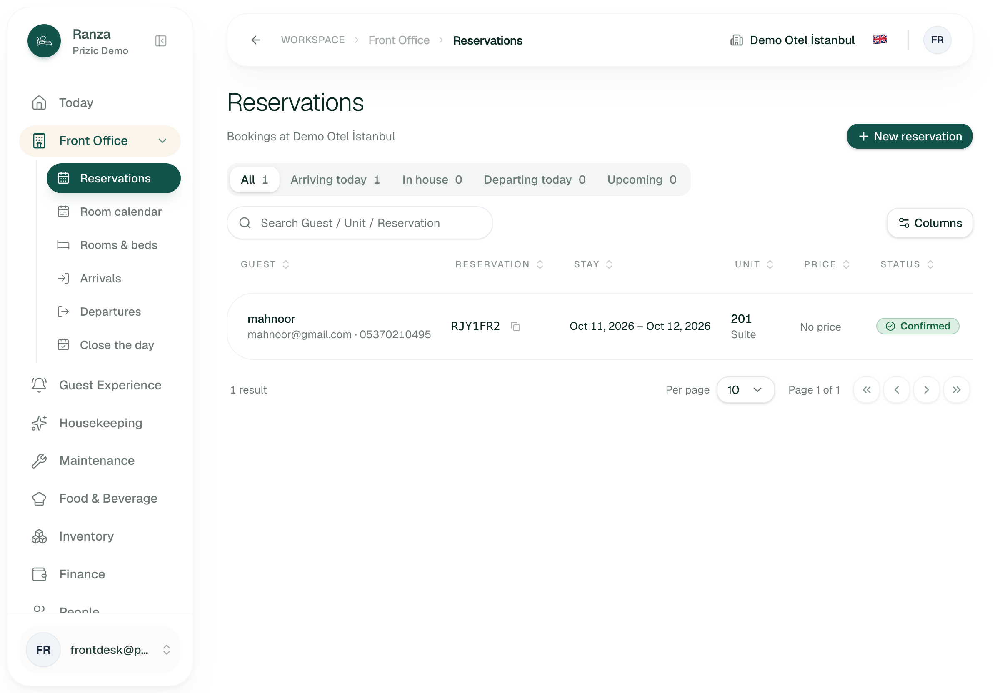
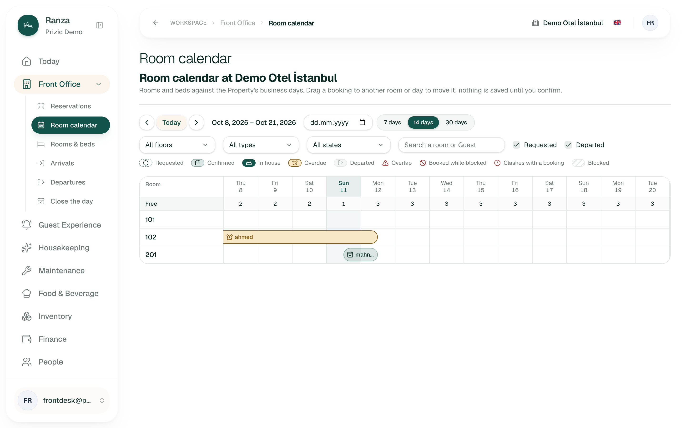
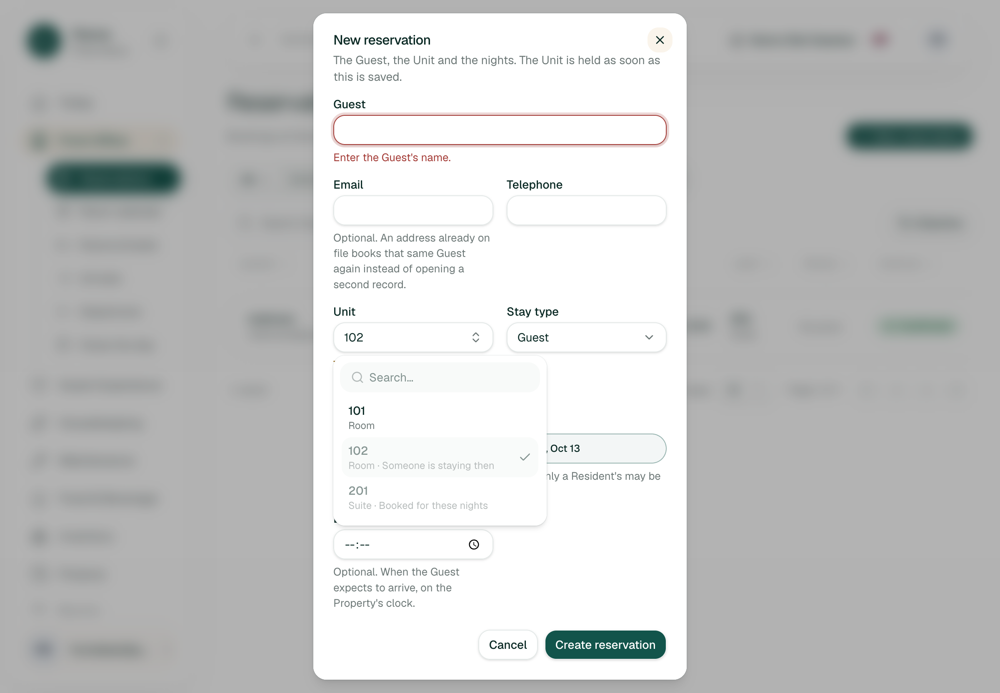
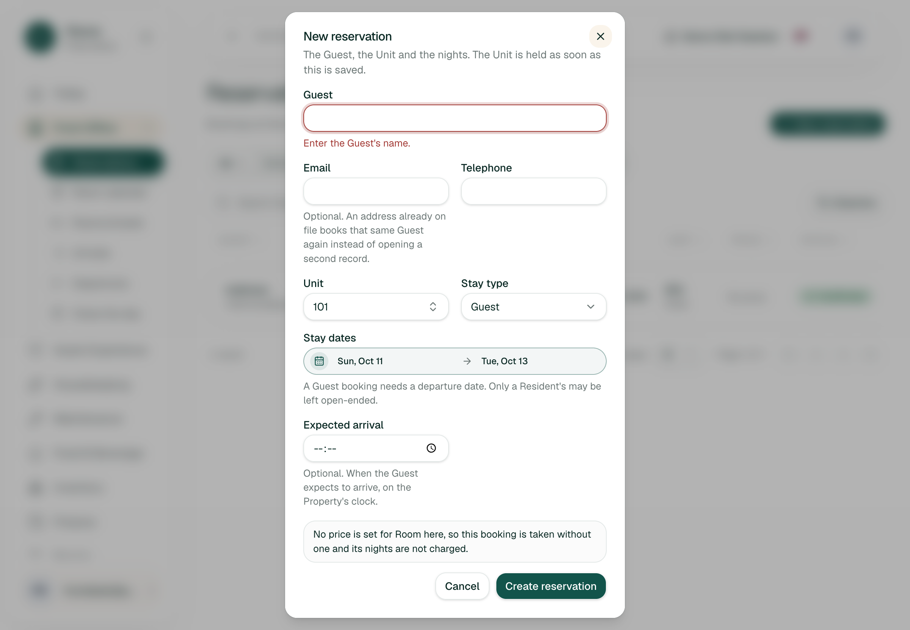
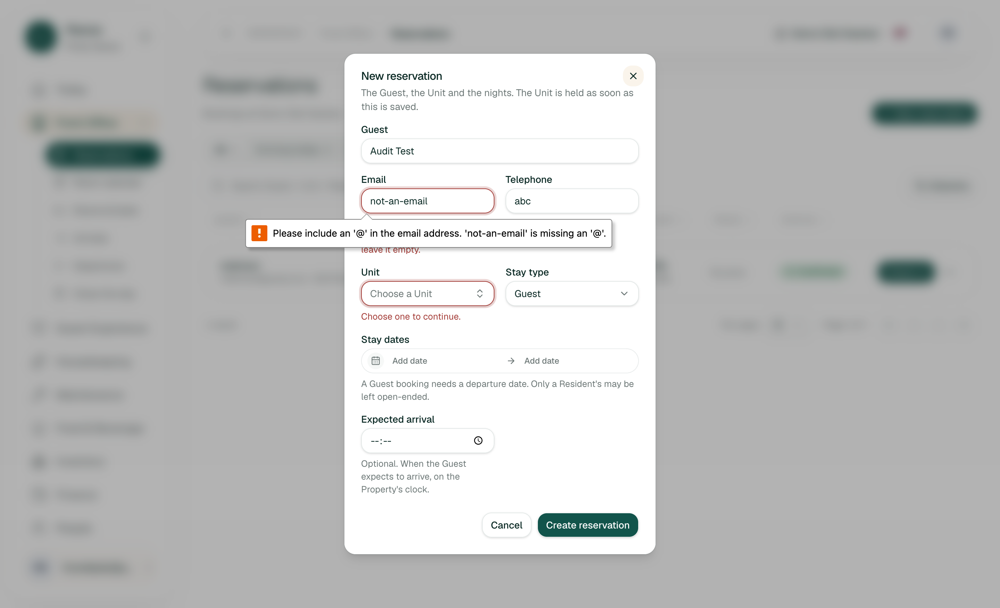
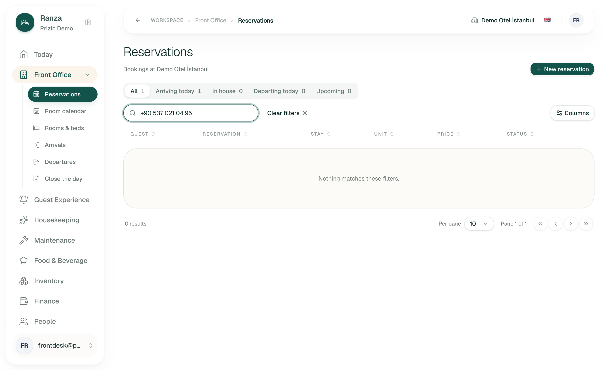
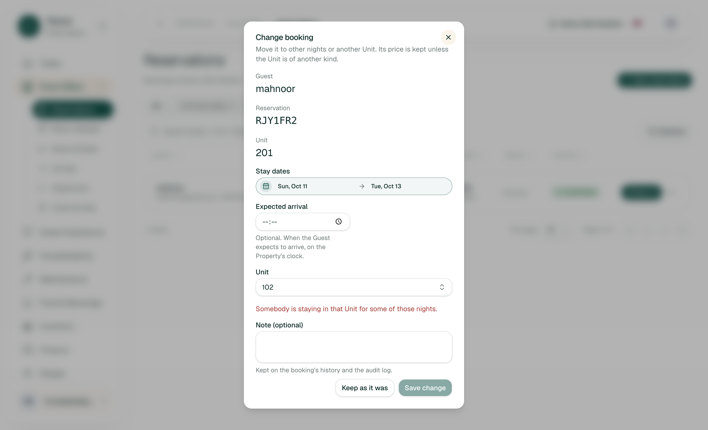
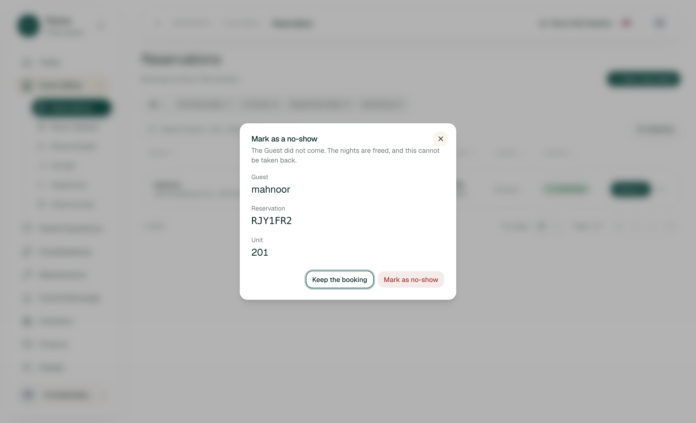
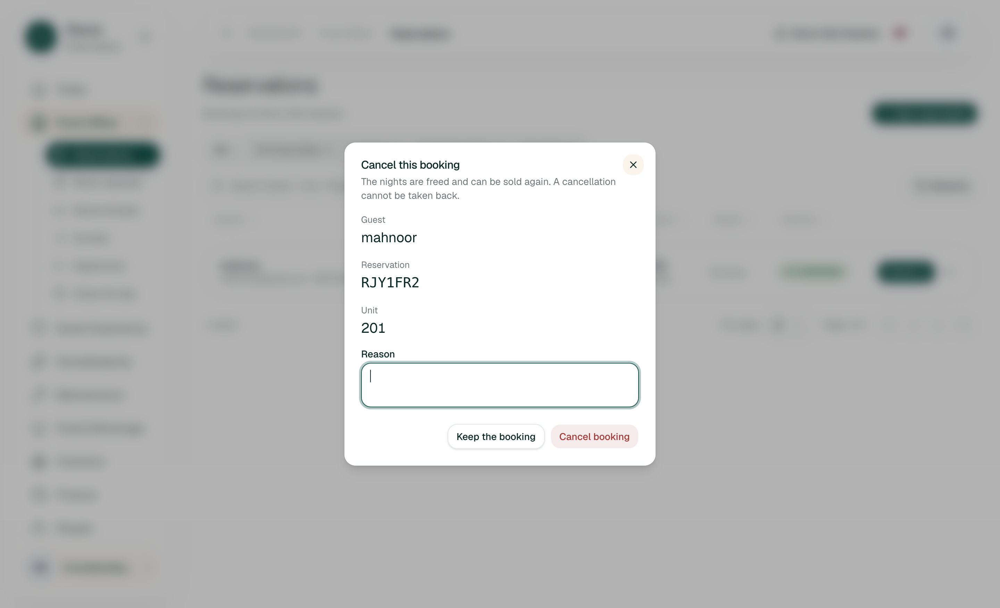
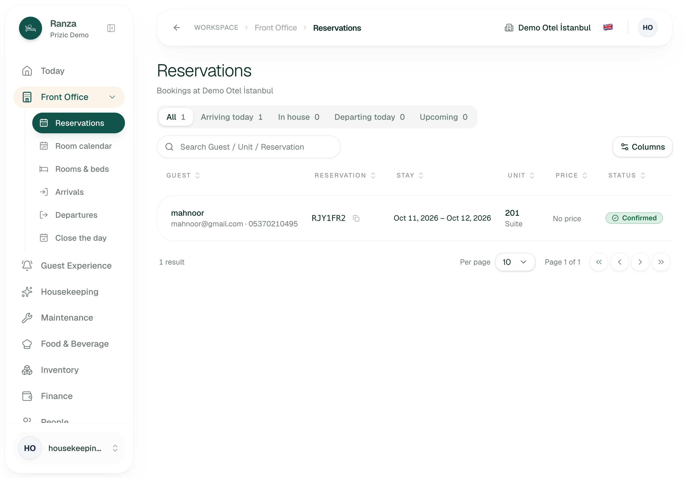
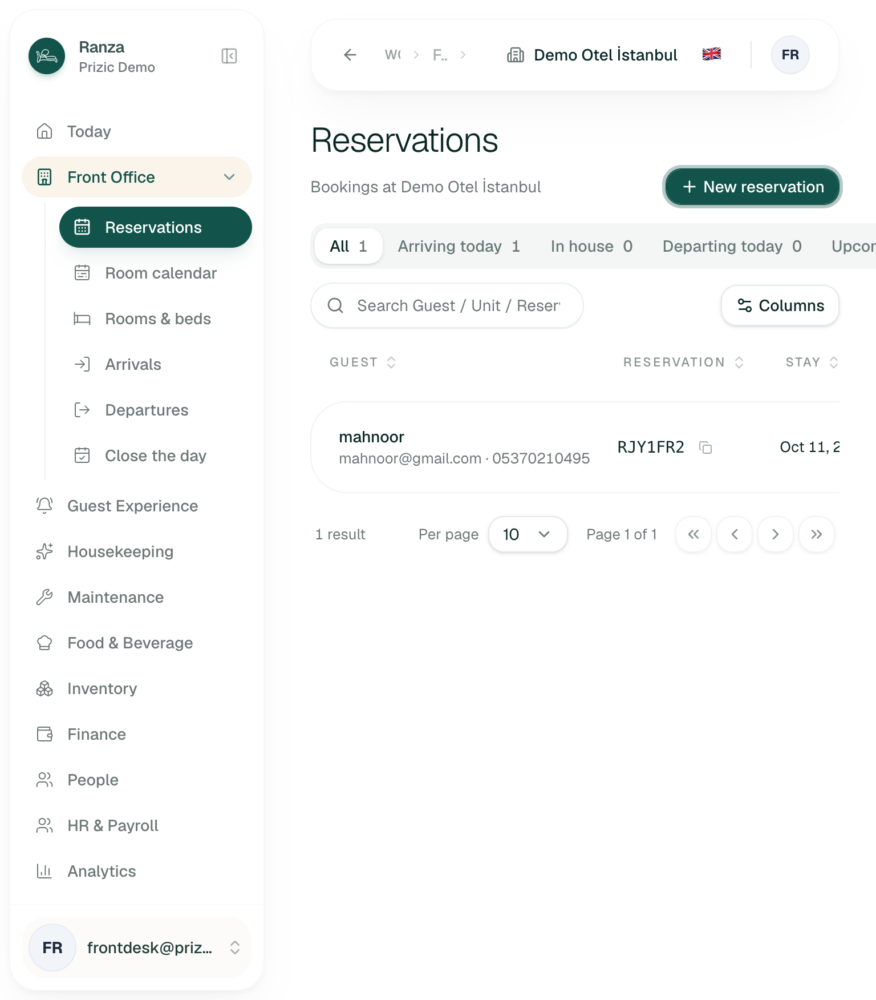
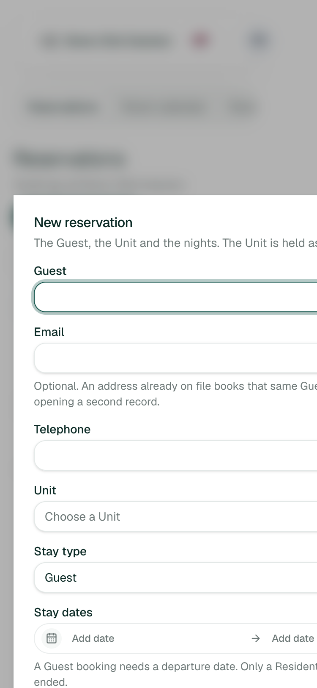
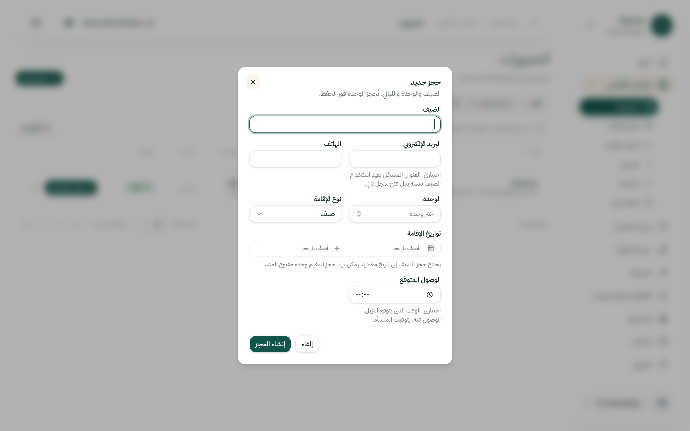
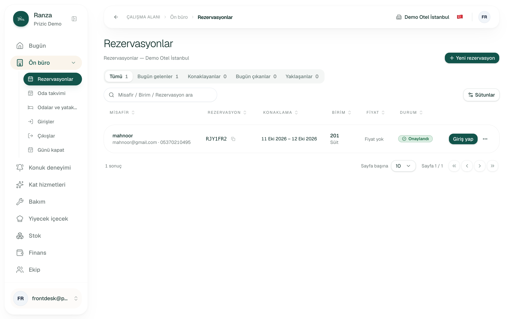
Not done
- No valid create, change, cancel or no-show was submitted. J3, J6 and J7 stopped before the final submit; the empty-reason cancel form and the invalid new-booking form were submitted only while invalid (browser blocked them).
- Keyboard-only use of the date picker was not exercised; focus did land on the Guest field when each dialog opened. The priced quote, the empty state with zero bookings, outside-click discard (RES-08) and a large list were not reachable.
- The Owner and Manager roles were not checked; the brief named Front Desk, Housekeeping and Finance.